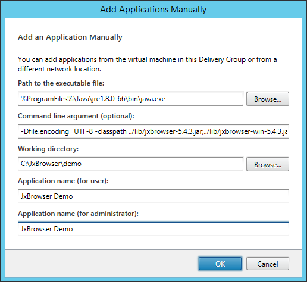
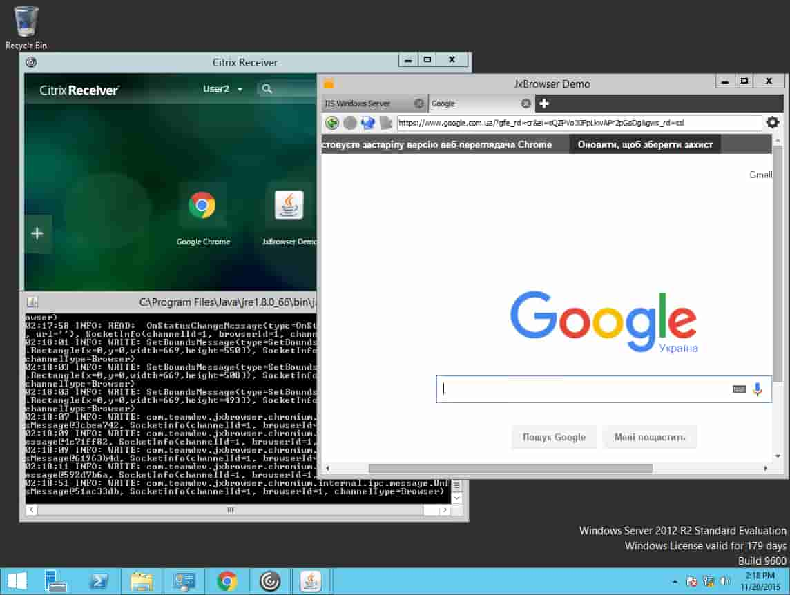

Note: Advice in this article will only work for JxBrowser 6. See the corresponding article for JxBrowser 7 here.(注意：本文中的建议仅适用于JxBrowser6，JxBrowser7相应文章请点击这里。)
JxBrowser can be used in Citrix environment if it's configured in appropriate way. The following instruction describes how Citrix environment should be configured to be able to run JxBrowser Demo application.(如果以适当的方式配置了JxBrowser，则可以在Citrix环境中使用它。以下说明描述了应如何配置Citrix环境以使其能够运行JxBrowser Demo应用程序。)
Using the approach described below you can configure Citrix to run any Java application based on JxBrowser library.(使用下面描述的方法，您可以配置Citrix以运行基于JxBrowser库的任何Java应用程序。)
Preconditions(前提条件)
1. Download and install VirtualBox.
2. Download and install Windows Server 2012 on VirtualBox's VM (VM#1). Make sure that you use the Host Only network with no DHCP VM setting.(1.下载并安装VirtualBox。 2.在VirtualBox的VM（VM＃1）上下载并安装Windows Server 2012。确保您使用没有DHCP VM设置的“仅主机”网络。)
3. Set static IP for installed VM#1.
4. Add following server roles:(3.为已安装的VM＃1设置静态IP。 4.添加以下服务器角色：)
4.2. DNS Server(4.2。 DNS服务器)
5. Configure Active Directory and DNS following to wizard’s instructions. Setup SSL according to the instruction.(5.按照向导的说明配置Active Directory和DNS。根据说明设置SSL。)
6. Install second VM with downloaded Windows Server 2012 (VM#2). Make sure that you use the Host Only network on the same controller as VM#1 VM setting.7. Set static IP for installed VM#2 in the same sub-network as VM#1.
8. Join VM#2 to Active Directory located on VM#1.
9. Import SSL certificate from VM#1.
XenDesktop Setup(XenDesktop设置)
1. Download Citrix XenDesktop.(1.下载Citrix XenDesktop。)
2. Install XenDesktop on VM#2. Note: it won’t install on domain controller.(2.在VM＃2上安装XenDesktop。注意：它不会安装在域控制器上。)
3. Install Delivery Controller.(3.安装交付控制器。)
4. Configure the XenDesktop.(4.配置XenDesktop。)
4.1. Add VM#2 into new Delivery Group and manually add Application as shown below:(4.1。将VM＃2添加到新的交付组中，然后手动添加应用程序，如下所示：)

4.2. Important: Do not configure StoreWeb yet!(4.2。重要：请勿配置StoreWeb！)
5. Install and configure Virtual Delivery Agent for Windows Server OS. After setup: change StoreWeb base URL to use HTTPS.(5.安装和配置Windows Server OS虚拟交付代理。设置后：将StoreWeb基本URL更改为使用HTTPS。)
Test Configuration(测试配置)
1. Install Citrix Receiver on VM#1. Install CitrixReceiver.exe. Connect to VM#2 using IE and allow installation of CitrixReceiver.exe.(1.在VM＃1上安装Citrix Receiver。安装CitrixReceiver.exe。使用IE连接到VM＃2，并允许安装CitrixReceiver.exe。)
2. Ensure application could be started in Browser and close browser.(2.确保可以在浏览器中启动应用程序并关闭浏览器。)
3. Open Citrix Receiver, enter server name as vm1.domain.local and ensure that application could be started in Citrix Receiver client.(3.打开Citrix Receiver，输入服务器名称为vm1.domain.local，并确保可以在Citrix Receiver客户端中启动应用程序。)
